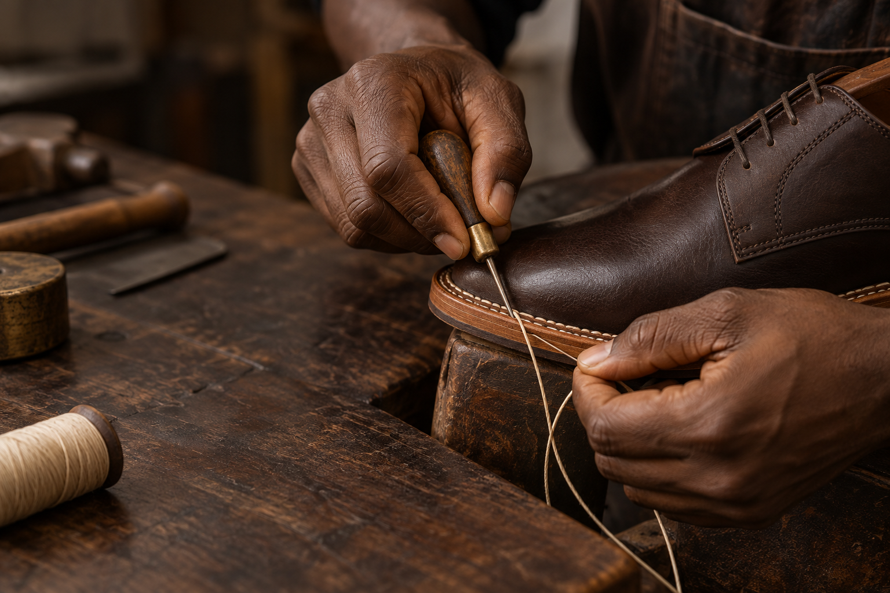
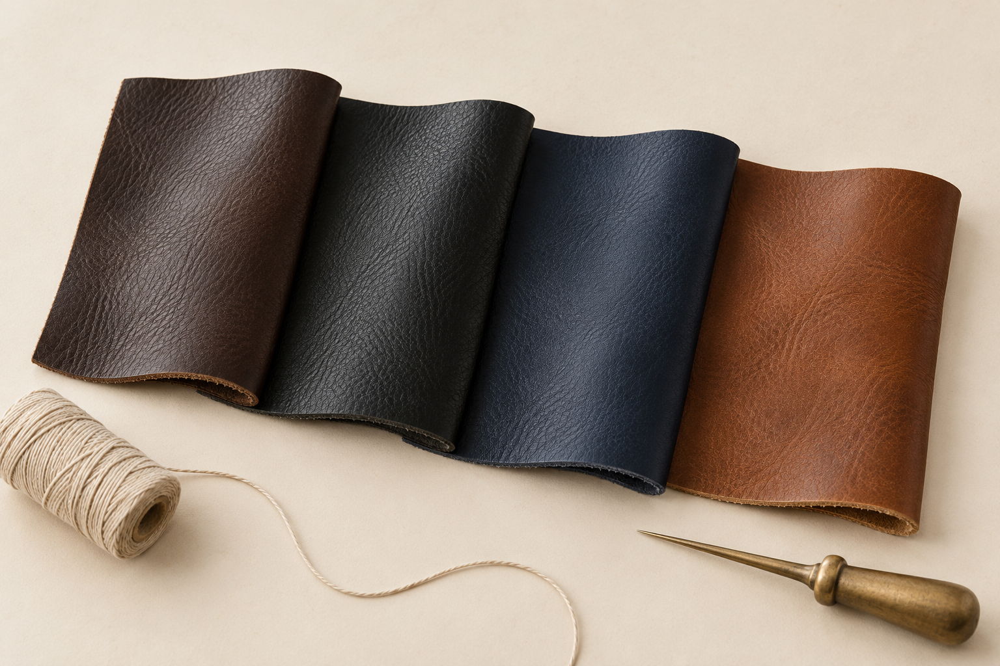
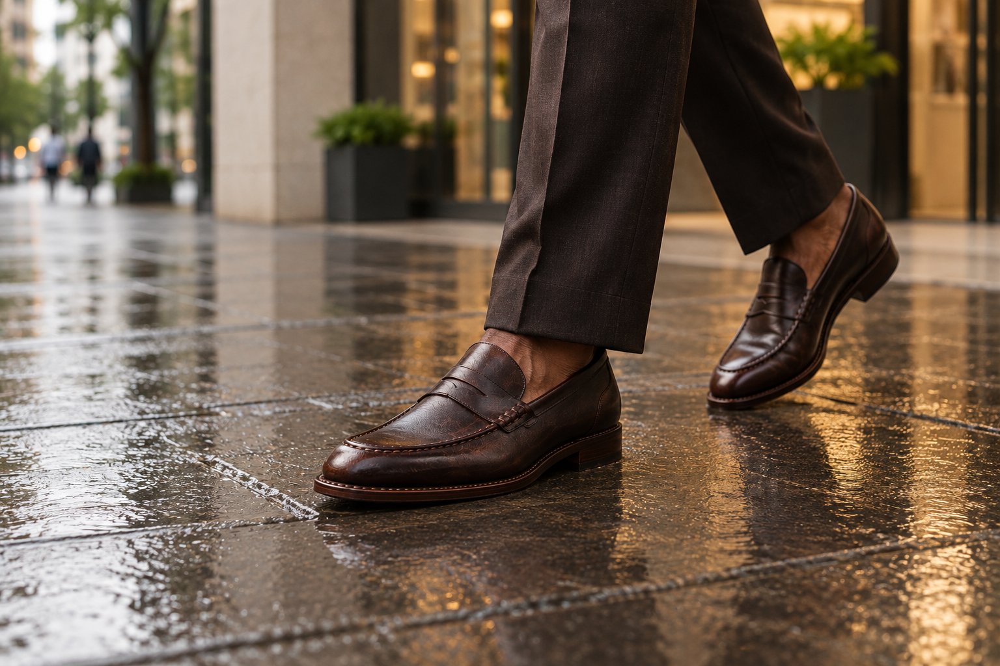
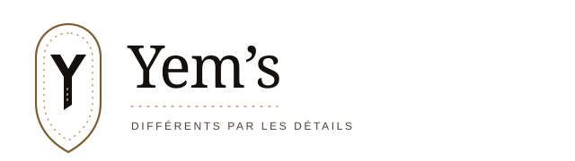
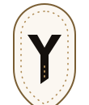
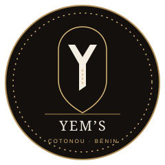

L’atelier
Fabriqué à Cotonou. Une paire prend 15 jours d’atelier et peut être ressemelée.
Cousu mainSur mesure
Cotonou · Bénin
Des souliers que l’atelier fabrique. D’autres qu’il choisit. Dans les deux cas, Yem’s en répond.

Visuel de campagne · geste de coutureLe geste
Le point sellier tient la semelle au soulier. Quand elle s’use, elle se remplace. Le détail n’est pas décoratif : il change la durée de vie de la paire.
Voir les pièces de l’atelierDeux façons de travailler
L’origine est visible avant le prix. C’est une règle de confiance autant qu’une façon de choisir.
Fabriqué à Cotonou. Une paire prend 15 jours d’atelier et peut être ressemelée.
Choisi et contrôlé par la maison. Yem’s l’assume et précise ce qu’il garantit.
Une retouche offerte sur l’atelier. Un échange d’un an sur la sélection.
Le configurateur
Espresso, noir, marine ou cognac : les matières se regardent à la lumière avant de se choisir.
Explorer les optionsÉchantillons de cuir illustratifs · teintes affichées à titre de direction visuelle

Le porté
Une paire qui accompagne une journée de travail, une cérémonie, et le bitume mouillé de juin.
Photographie de campagne générée · à distinguer des photos de catalogue.

Nouvelle piste · famille de logo
Cette piste garde la couture comme détail distinctif, mais construit un système plus cohérent : logo principal, monogramme compact et sceau d’atelier.

Signature principale.
Pour l’en-tête, le site, les emballages et les documents de la maison.

Monogramme.
Pour l’avatar, le favicon, une étiquette ou un petit marquage.

Sceau d’atelier.
Pour les cartes de garantie, les papiers de paire et les fonds sombres.